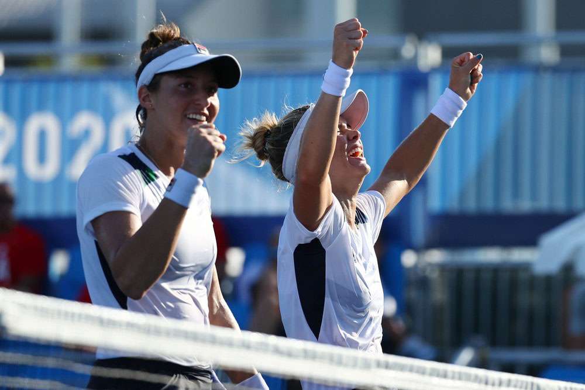

Rebeca Andrade é ouro nas Olímpiadas - Foto: Ricardo Bufolin/Panamerica Press/CBG.
Rebeca Andrade é ouro nas Olímpiadas - Foto: Ricardo Bufolin/Panamerica Press/CBG.
Rebeca salta para a história
Depois da prata no individual geral, volta a subir ao pódio e conquista a sua segunda medalha nos jogos. Rebeca é a primeira brasileira a ganhar duas medalhas em uma edição dos Jogos.
 Bruno Fratus comemora Bronze! - Foto: REUTERS/Marcos DJurica.
Bruno Fratus comemora Bronze! - Foto: REUTERS/Marcos DJurica.
Enfim, medalhista olímpico!
Fratus faz história, conquista o bronze e dá ao país a 4º medalha da história dos 50m Livre nas Olimpíadas.

Luisa Stefani e Laura Pigossi - Foto: Reuters.
Bronze como Ouro.
Após semana intensa nas Olimpíadas de Tokyo 2020, dupla brasileira comemora a medalha olímpica inédita: “Não consigo acreditar em tudo que a gente conseguiu''.
 Rebeca Andrade é prata nas olimpíadas - Foto: Ricardo Bufolin/CBG.
Rebeca Andrade é prata nas olimpíadas - Foto: Ricardo Bufolin/CBG.
Pode vir mais por aí!
Depois de conquistar a prata no individual geral, Rebeca Andrade volta a competir em busca da segunda conquista nas Olimpíadas de Tóquio.
 Mayra Aguiar com a medalha de bronze - Foto: REUTERS/Sergio Perez.
Mayra Aguiar com a medalha de bronze - Foto: REUTERS/Sergio Perez.
É bronze!
Brasileira vence sul-coreana Hyunji Yoon por ippon com mobilização e conquista terceira medalha olímpica na carreira.
 Italo Ferreira - Foto: REUTERS/Lisi Niester.
Entrou para a História!
Italo Ferreira - Foto: REUTERS/Lisi Niester.
Entrou para a História!
O feito histórico de Ítalo Ferreira, ao conquistar a primeira medalha de ouro no surfe nas Olimpíadas, trouxe grandes nomes da modalidade a repercutirem esse marco.
Fernando Scheffer comemora medalha de bronze nos 200m livre - Foto: Satiro Sódre/SSPress/CBDA.
Parece que estou sonhando!
Scheffer surpreende nos 200m livre e coloca o país no pódio em prova que Gustavo Borges fez história em Atlanta-1996 em 14ª medalha olímpica para o país na modalidade.
 Rayssa Leal faz manobra na final - Foto: Ezra Shaw/Getty Images.
Rayssa Leal faz manobra na final - Foto: Ezra Shaw/Getty Images.
A fadinha encantou!
Rayssa Leal faz história e é prata no skate street nas Olimpíadas de Tóquio. Maranhense de 13 anos faz grande prova e é superada apenas por japonesa.